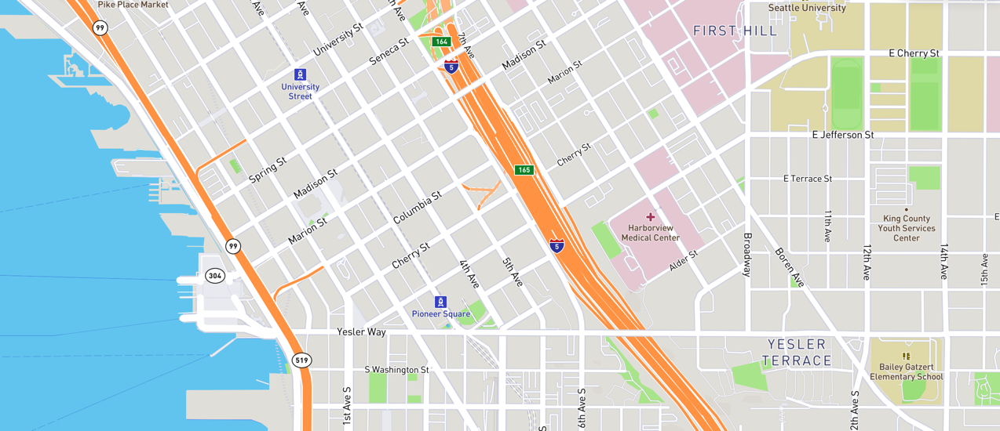

<section class="welcome" data-ng-controller="LocationsController as locctrl">
  <div>
    <p>text... locate... eat...</p><span>|</span>
    <p>Next Meal</p>
  </div>
</section>

<section class="location">
  <ul>
    <li>
      <p>Find A Location</p>
    </li>
    <li>
      <input type="text" placeholder="enter zip code">
    </li>
    <li>
      <button type="submit" class="find_btn" data-ng-click="locctrl.getAll()">Find</button>
    </li>
  </ul>
</section>

<section class="map" data-ng-if="!locctrl.results">
  
</section>

<section class="results" data-ng-if="locctrl.results">
  <div class="location_list_wrapper">
    <ul class="location_list">
      <locations_list data-ng-repeat="location in locctrl.locations | limitTo:5" data-location="location">
      </locations_list>
    </ul>
    </img>
  </div>
</section>
